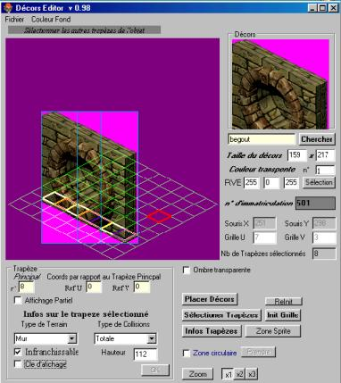

Editeur des décors du jeu. Il permet de placer
au pixel près un tile sur une grille de trapèzes.
C’est dans cet éditeur que l’on positionne les murs, les
barrières, les dalles, les plates bandes de terre et d’herbes,
le mobilier ...
Ensuite, on remplit différents paramètres concernant
le tile :
- les trapèzes situés sur le sol,
- la hauteur des murs,
- la couleur de transparence,
- le type de surface,
- la manière de gérer les collisions,
Lorsque certains décors s’avèrent trop larges,
il faut les découper en lamelles verticales afin de ne pas
avoir de problèmes de clipping pendant le jeu lorsqu’un personnage
passe, par exemple, derrière un mur.
|

|